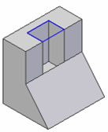

Revolved Protrusion command bar
-
Available Actions
Lists alternate actions which are available for the selected element. When you have selected a sketch region, the default action in a new document is to construct an extruded feature.
-
Extrude
Specifies that you want to construct an extruded feature.
-
Revolve
Specifies that you want to construct a revolved protrusion.
-
-
Add/Cut
Specifies whether the cursor position determines whether material is added or removed. When constructing a base feature, only the Extrude option is available.
-
Automatic
Specifies that material is added or removed from the model based on the current cursor position relative to the model. If your cursor is outside of the sketch plane, material is added. If the cursor is inside the sketch plane, material is removed. This option is the preferred option in most cases. For models with complex geometry, you may want to specify the Add or Cut options.
-
Add
Specifies that material is added to the model.
-
Cut
Specifies that material is removed from the model.
-
-
Extent Type
Specifies whether the sketch elements are revolved a finite number of degrees, or 360 degrees.
-
Finite Extent
Sets the feature extent so that the sketch region is revolved a finite distance. You can specify the distance to revolve using the cursor or by typing a value in the dynamic input control box.
-
360
Sets the feature extent so that the sketch region is revolved 360 degrees about the revolution axis.
-
-
Symmetric
Specifies that the feature extent is to be applied symmetrically about the sketch plane.
-
Keypoints
Sets the type of keypoint you can select to define a feature extent or to position a new reference plane. You can define the feature extent using a keypoint on other existing geometry. The available keypoint options are specific to the command and workflow you use.

Sets the any keypoint option.

Sets the end point option.

Sets the midpoint option.

Sets the center point option. You can select the center point of an arc or circle.

Sets the tangency point option. You can select a tangent point on an analytic curved face such as a cylinder, sphere, torus, or cone.

Sets the silhouette point option.

Sets the edit point on a curve option.

Sets the no keypoint option.
-
Closed Sketch
Specifies whether adjacent model edges are considered part of the sketch region when an open sketch is attached to one or more model edges. This allows you to control how adjacent faces are trimmed in certain situations.
-
Open
Ignores adjacent model edges. When this option is set, additional faces may be modified, such as illustrated in the extruded cutout example below.

-
Closed
Includes adjacent model edges. When this option is set, fewer faces may be modified, such as illustrated in the extruded cutout example below.

-
-
Axis
Specifies the sketch element you want to use as the revolution axis.
This option is available when you construct revolves features using the Revolved Protrusion command.
This option is disabled when you construct revolved features using the Select tool. When using the Select tool, you define the axis of revolution by clicking the Origin knob on the Revolution handle, which attaches it to the cursor. You can then drop the Revolution handle onto the sketch element or model edge which you want to use as the axis of revolution.
-
Display Command bar
Specifies that you want all of the command bar options displayed.
-
Create Live section
Creates a Live Section for the revolved feature upon completion. The default setting is On.
How do I
Construct a revolved extrusion: base featureConstruct a revolved extrusion or cutout: subsequent features
Edit the radius of a face
Move a group of faces radially along a direction
Learn more
Constructing revolved synchronous featuresConstructing revolved features using the Select tool
Look up more details
Revolve commandRevolve command bar
Radiate command
Radiate command bar